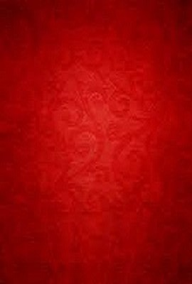

Um Estudo em Vermelho é a primeira história de Sherlock Holmes e o primeiro livro
publicado por Sir Arthur Conan Doyle (1859-1930). Um estudo em vermelho propõe um
enigma terrível e invencível para a polícia, que pede auxílio a Holmes: um homem
é encontrado morto, sem ferimentos e cercado de manchas de sangue.


Um estudo em vermelho
Autor: Arthur Conan Doyle
Editora: L&PM
Páginas: 192
Ano: 1998